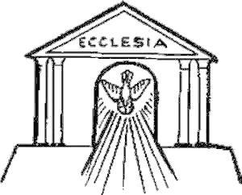

MAGISTERIO DE LA IGLESIA
Todo cristiano que quiera desenmascarar las intrigas de los herejes que brotan a nuestro alrededor, evitar sus trampas y mantenerse íntegro e incólume en una fe incontaminada, debe, con la ayuda de Dios, pertrechar su fe de dos maneras: con la autoridad de la ley divina ante todo, y con la Tradición de la Iglesia Católica. (S. Vicente de LerinsConmonitorio, Apuntes para conocer la fe verdadera)
-
¿SOLO EL MAGISTERIO DOGMÁTICO ES INFALIBLE? - Antonio Moimunán
- CONCILIOS DE LA IGLESIA
- MAGISTERIO DE LOS PAPAS
- MAGISTERIO SOBRE NUESTRO SEÑOR
- MAGISTERIO SOBRE LA SMA. VIRGEN
- MAGISTERIO SOBRE EL SANTÍSIMO ROSARIO
- MAGISTERIO SOBRE EL LAS SAGRADAS ESCRITURAS
- MAGISTERIO SOBRE EL SACERDOCIO
- MAGISTERIO SOBRE LA MASONERÍA
- MAGISTERIO SOBRE EL MODERNISMO
- MAGISTERIO SOBRE LA VERDADERA PAZ
- MAGISTERIO SOBRE EL COMUNISMO
- MAGISTERIO SOBRE EL ECUMENISMO
- PATRÍSTICA
- DOCTORES DE LA IGLESIA
- ESCRITOS ECLESIÁSTICOS
